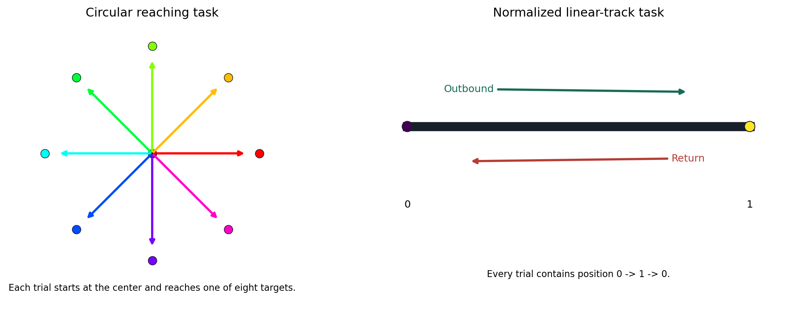
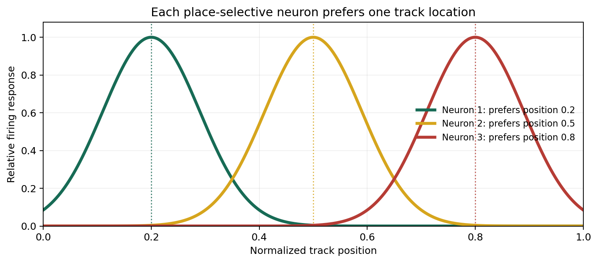
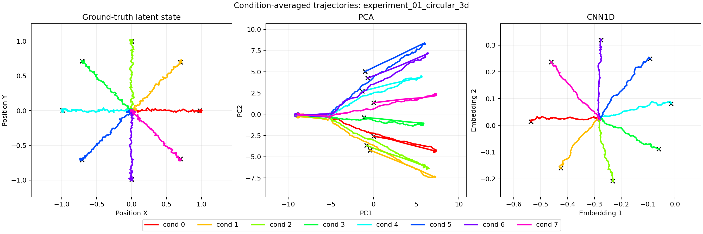
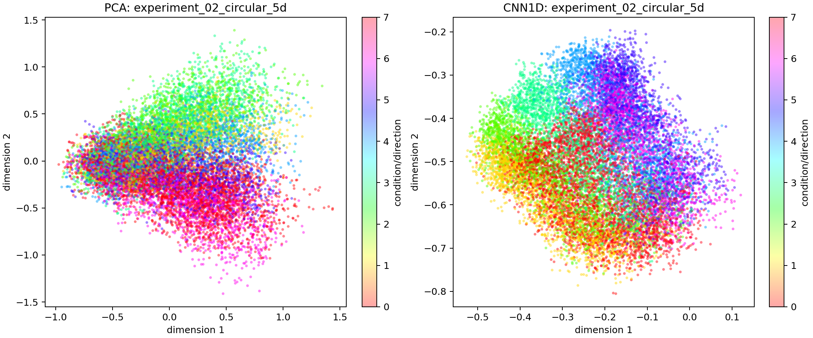
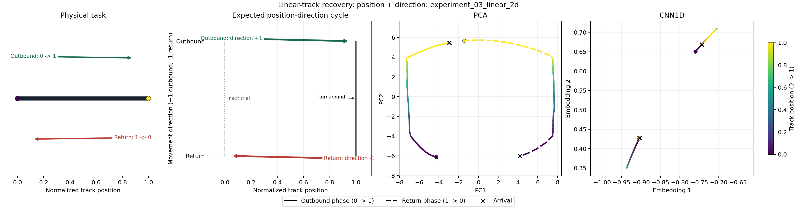
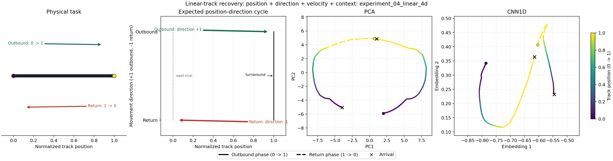

Controlled neural time-series research
NeuroBridge
Generate known motor-task latents, emit sparse neural populations, and test whether linear and temporal encoders recover the geometry.
Inspect the experiment matrixResearch question
What survives the neural observation process?
The simulator gives us ground truth. Circular and linear task trajectories are mapped into heterogeneous neural populations, converted to stochastic spike counts, and encoded with PCA or CNN1D. Recovery is measured against the latent process that generated them.
Controlled comparisons
Two motor tasks, each tested at two levels of complexity
Every experiment starts from a known, interpretable movement state. The essential version contains only the coordinates needed to describe the task. The enriched version adds velocity and context while keeping the same simulation and evaluation pipeline.

Linear-track population
Some neurons prefer one location on the track
Each place-selective neuron is assigned a preferred position between 0 and 1. Its firing rate is highest near that position and decreases farther away. Different preferred positions make the neural population cover the complete route.

Evaluation on unseen trials
Do learned embeddings preserve the known latent geometry?
Models are fitted using 128 of the 160 simulated trials. The table evaluates the remaining 32 trials, which the models never see during fitting. The reported number is not classification accuracy.
For every pair of test windows, measure how far apart their known latent states are.
For the same pairs, measure how far apart the encoder output points are.
Spearman rho tests whether pairs ranked near or far in the true state retain that ordering in the embedding.
This is strong agreement in pairwise-distance ordering. It does not mean 92.7% accuracy, and it does not by itself prove that the visible trajectory or loop has the correct shape. A value near 1 means strong agreement; a value near 0 means little monotonic agreement.
Full state uses every simulated coordinate. Motor core uses X, Y, and progress for circular reaching, or position and movement direction for the linear track. The essential experiments contain only the motor core, so their full and core columns are identical.
Circular 5D shows why both comparisons are needed: CNN1D preserves the three-coordinate motor core strongly (rho = 0.904), but agrees less with the complete state after velocity and context are included (rho = 0.619). In the linear experiments, the trajectory panels show that CNN1D compresses the cycle despite nonzero distance agreement.




Generative and learning blocks
Known latent -> neural drive -> spikes -> representation
- 01Task latent
Generate circular or linear trajectories with interpretable coordinates.
- 02Population map
Assign direction, position, mixed, contextual, or localized place tuning.
- 03Spike emission
Convert neural drive to rates and sample stochastic counts in 20 ms bins.
- 04Representation
Fit PCA and a residual temporal CNN on an 80% trial split using identical centered windows.
- 05Contrastive learning
Train CNN1D with a soft structured contrastive loss: graded pair affinities derived from time and task metadata guide neighborhoods in embedding space.
- 06Evaluation
Evaluate untouched trials with aggregate Procrustes R^2, RSA, and trial-averaged trajectories.
Reproduce
Start from the documented notebooks
The complete model, loss, tensor dimensions, evaluation protocol, and limitations are available in the repository documentation. A searchable version is also available in this site's documentation section.
notebooks/experiment_01_circular_3d.ipynb
notebooks/experiment_02_circular_5d.ipynb
notebooks/experiment_03_linear_position_direction.ipynb
notebooks/experiment_04_linear_enriched.ipynb
# Terminal mirrors
python -m pip install -e .
python notebooks/experiment_01_circular_3d.py
python notebooks/experiment_02_circular_5d.py
python notebooks/experiment_03_linear_2d.py
python notebooks/experiment_04_linear_4d.py